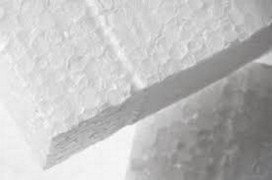

| Immobilier | Matériaux | Extérieur | Intérieur |
| Sol |
|
Le Polystirène 
Le polystirène est un parfait isolant sa durrée de vie ,son prix abordable et constitué de 98%d'air. |
|
Polyuréthane Le polyuréthane possède le meilleur pouvoir isolant parmi les isolants synthétique courants le plus souvent aux combles ou au doubles murs extérieur . Il sera donc très intéressant lorsqu'il s'agit d'un grand espace . Le polyuréthane est adapté en milieu humide ce qui lui confère une grande polyvalence , mais cet isolant est é aux anciens bâtiments et ne contribue pas au confort des chaleur d'été. |
|
Liège Le seul isolant de la liste à être écologique en vus de sa ée de vie élevée ,la matière première provenant de source animal ou végétale , la possibilité de renouvellement et plein d'atout.Cet isolant peu choisis demeure un très bon isolant thermique (0,042 W/m.K)permettant de retenir une grande partie de la chaleur puis la retranscrire dans la pièce avec un tamps assez long en plus de baisser la consommation énergétique en hiver. |